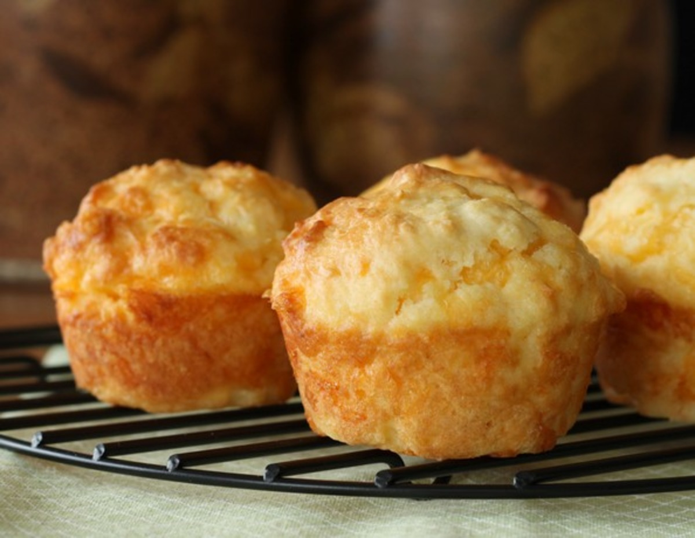

Cheese Muffins

Description
Keep a stash for snacking, pop them in lunch boxes or serve a
basket of these with dinner!
Ingredients
Butter and Cheese
- 50g salted butter
- 2 garlic cloves
- 2 cups grated cheddar cheese
Dry Ingredients
- 300g plain flour
- 1 1/2 baking powder
- 1/2 tsp baking soda
- 1/2 tsp salt
Wet Ingredients
- 1 egg
- 1 cup milk
- 1/4 cup sour cream
- 1/3 cup vegetable oil
- 1/4 cup finely chopped fresh parsley
- 1 garlic clove
Steps
- Preheat oven to 180C/350F (standard) or 160C/320F (fan).
- Place butter and garlic in a microwave proof bowl and
melt in 30 second bursts. Mix.
- Brush a 12 hole standard muffin tin generously with
butter, being sure to slather with some garlic. Reserve
some butter to brush tops.
- Whisk Dry ingredients in a bowl.
- Whisk Wet ingredients in a separate bowl.
- Pour Wet into the Dry ingredients bowl. Mix 8 times.
Add cheese, mix as few times as possible just to
incorporate remaining bits of flour - no more than 7
big stirs (secret to soft muffs).
- Divide between 11 holes in muffin in (I use an ice
cream scooper). Batter should be thick and fill
muffin tin to top (if in ball shape due to scooper,
leave as is). See video
- Bake for 22 - 25 minutes or until the muffins are
golden and crusty and spring back when touched in the
centre.
- Remove onto cooling rack, brush with remaining butter
(microwave again if needed) and cool slightly before
getting stuck into them!